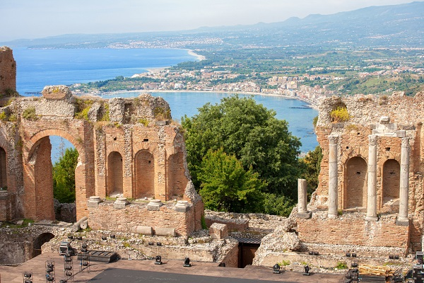
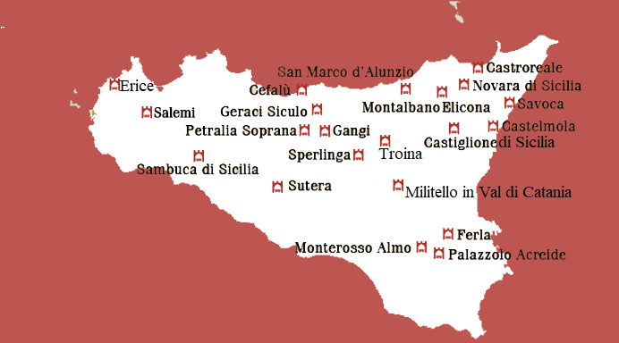
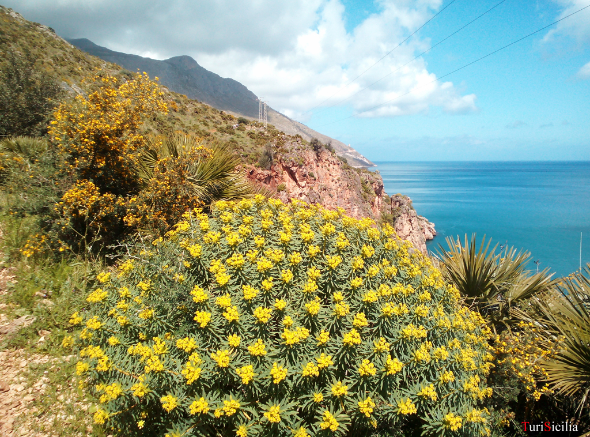

Сицилія
сто тисяч поїздок в одному
Сицилія - туристичний острів, який приємний цілий рік. Багато хто вибирає його взимку, щоб уникнути холодної зими на півночі і зануритися в місцеву культуру. Любителі моря зможуть повністю насолодитися морем у будь-який період року.
Карнавал на Сицилії має давнє походження. Це свято достатку та затишку.
Сицилія - музей під відкритим небом! Давайте проведемо екскурсію по острову, відкривши для себе найвеличніше.
Сицилія менш відома і, можливо, більш автентична. Прекрасні місця, багаті історією та місцевістю.
Там, де зустрічаються море та дика природа - це часто трапляється на Сицилії.